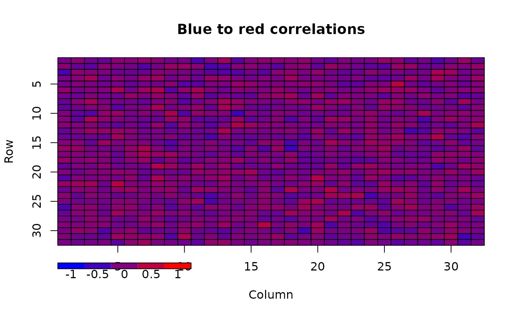
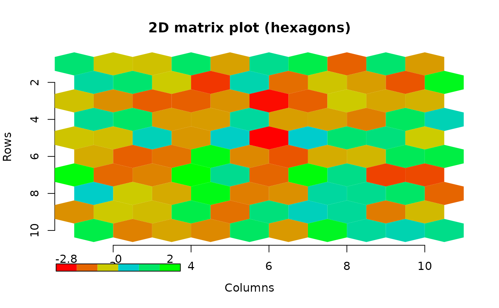
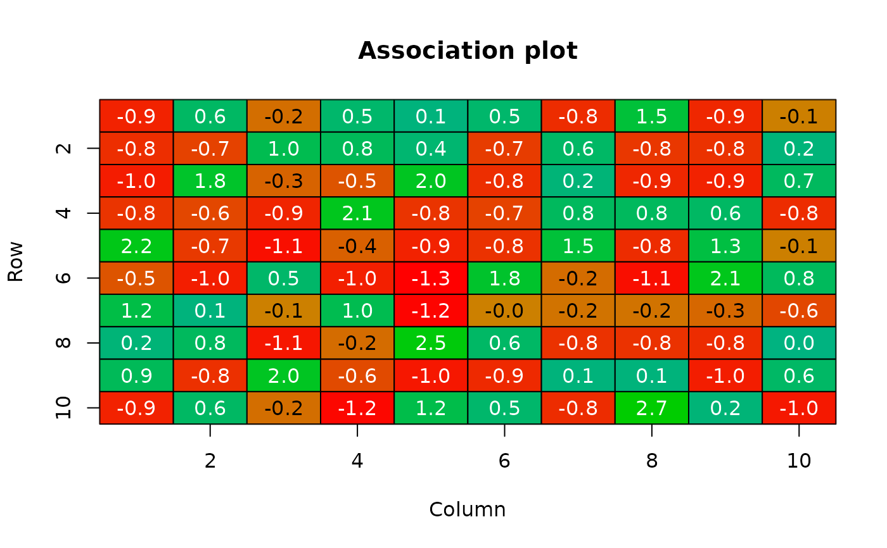
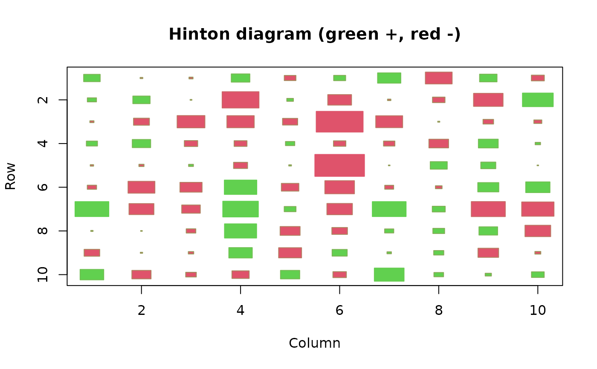
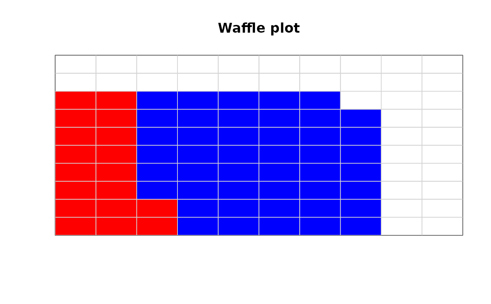
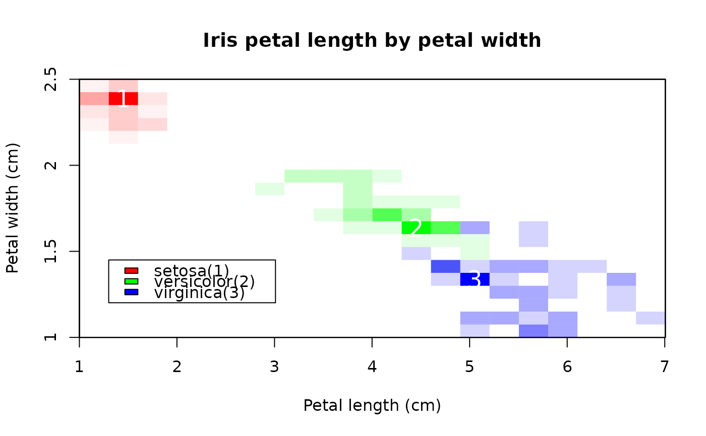

Display a numeric matrix as color matrix
color2D.matplot.RdDisplay the values of a numeric 2D matrix or data frame as colored rectangles or hexagons.
Usage
color2D.matplot(x,cs1=c(0,1),cs2=c(0,1),cs3=c(0,1),
extremes=NA,cellcolors=NA,show.legend=FALSE,nslices=10,xlab="Column",
ylab="Row",do.hex=FALSE,axes=TRUE,show.values=FALSE,vcol=NA,vcex=1,
border="black",na.color=NA,xrange=NULL,color.spec="rgb",yrev=TRUE,
xat=NULL,yat=NULL,Hinton=FALSE,add=FALSE,...)Arguments
- x
data values
- cs1,cs2,cs3
the color parameters that will be scaled to represent the range of numeric values. (see color.scale)
- extremes
The colors for the extreme values of x. Takes precedence over the color ranges.
- cellcolors
A precalculated matrix of cell colors. This must have the same number of rows and columns as the matrix or it will be uninformative. It can be a vector, but be careTakes precedence over both extremes and color ranges.
- show.legend
whether to display a color legend with the extreme numeric values in the lower left corner of the plot. This will force the color specification to "rgb", so if this is different from the color specification requested, call color.legend separately.
- nslices
The number of color "slices" in the legend.
- xlab,ylab
axis labels for the plot.
- do.hex
plot packed hexagons instead of rectangles.
- axes
Whether to suppress the default axis labelling.
- show.values
Whether to display the numeric values of x. This also controls the number of decimal places displayed.
- vcol
The color for the value display. If NA, the values are displayed in black or white depending upon the darkness of the cell color.
- vcex
The character expansion for the value display.
- border
The color(s) for the borders of the cells. Pass NA if no border is wanted.
- na.color
The color to use for NA values of x.
- xrange
An explicit range for the transformation of colors. see color.scale
- color.spec
The color specification system to use.
- yrev
Whether to reverse the order of the y-axis to display the cells in "reading" order (left to right and top to bottom) if TRUE, or in the order of a typical plot (left to right and bottom to top) if FALSE.
- xat,yat
Values at which to place tick marks to override pretty.
- Hinton
Whether to display a Hinton diagram in which the magnitude of cell values is proportional to the size of the squares and the sign is indicated by the color of the squares.
- add
If TRUE, no plot is created and the rectangles are displayed over whatever is on the current device (see the "iris" example).
- ...
arguments passed to plot.
Details
Displays a plot with the same number of rectangular or hexagonal cells as there are numeric values in the matrix or data frame. Each rectangle is colored to represent its corresponding value. The rectangles are arranged in the conventional display of a 2D matrix with rows beginning at the top and columns at the left. To get the rows beginning at the bottom, use yrev=FALSE. The color scale defaults to black for the minimum value and white for the maximum.
The user will have to adjust the plot device dimensions to get regular squares or hexagons, especially when the matrix is not square. As the margins are not equivalent for all display devices, this is currently a matter of trial and error. Drawing hexagons is quite slow.
show.values and show.legend are also used to control the number of decimal places displayed if the values or legend are shown. TRUE will give one decimal place, 2 two, and so on.
if Hinton is TRUE, a Hinton diagram in which the sizes of the squares are proportional to the absolute value of x and the colors of the squares indicate the sign of the x values will be displayed. This only works with squares.
If add is true, the color matrix is added to the current plot. This is probably only useful when displaying plots that are mostly transparent.
Note
The function image performs almost the same when passed a matrix of values without grid positions, except that it assigns values to a specified list of colors rather than calculating a color for each distinct value.
Examples
x<-matrix(rnorm(1024),nrow=32)
# simulate a correlation matrix with values -0.5 to 0.5
x<-rescale(x,c(-0.5,0.5))
# add a column with the extreme values (-1,1) to calculate
# the colors, then drop the extra column in the result
cellcol<-color.scale(cbind(x,c(-1,rep(1,31))),c(0,1),0,c(1,0))[,1:32]
color2D.matplot(x,cellcolors=cellcol,main="Blue to red correlations")
# do the legend call separately to get the full range
color.legend(0,-4,10,-3,legend=c(-1,-0.5,0,0.5,1),
rect.col=color.scale(c(-1,-0.5,0,0.5,1),c(0,1),0,c(1,0)),align="rb")

x<-matrix(rnorm(100),nrow=10)
# generate colors that show negative values in red to brown
# and positive in blue-green to green
cellcol<-matrix(rep("#000000",100),nrow=10)
cellcol[x<0]<-color.scale(x[x<0],c(1,0.8),c(0,0.8),0)
cellcol[x>0]<-color.scale(x[x>0],0,c(0.8,1),c(0.8,0))
# now do hexagons without borders
color2D.matplot(x,cellcolors=cellcol,xlab="Columns",ylab="Rows",
do.hex=TRUE,main="2D matrix plot (hexagons)",border=NA)
# for this one, we have to do the color legend separately
# because of the two part color scaling
legval<-seq(min(x),max(x),length.out=6)
legcol<-rep("#000000",6)
legcol[legval<0]<-color.scale(legval[legval<0],c(1,0.8),c(0,0.8),0)
legcol[legval>0]<-color.scale(legval[legval>0],0,c(0.8,1),c(0.8,0))
color.legend(0,-1.8,3,-1.4,round(c(min(x),0,max(x)),1),rect.col=legcol)

# do a color only association plot
xt<-table(sample(1:10,100,TRUE),sample(1:10,100,TRUE))
observed<-xt[,rev(1:dim(xt)[2])]
expected<-outer(rowSums(observed),colSums(observed),"*")/sum(xt)
deviates<-(observed-expected)/sqrt(expected)
cellcol<-matrix(rep("#000000",100),nrow=10)
cellcol[deviates<0]<-
color.scale(deviates[deviates<0],c(1,0.8),c(0,0.5),0)
cellcol[deviates>0]<-
color.scale(deviates[deviates>0],0,c(0.7,0.8),c(0.5,0))
color2D.matplot(x=round(deviates,2),cellcolors=cellcol,
show.values=TRUE,main="Association plot")

# Hinton diagram
border.col<-color.scale(x,extremes=2:3)
color2D.matplot(x,extremes=c(2,3),main="Hinton diagram (green +, red -)",
Hinton=TRUE,border=border.col)

# waffle plot of percentages with two contributing elements
waffle.col<-fill.corner(c(rep("red",18),rep("blue",45)),10,10)
color2D.matplot(matrix(1:100,nrow=10),cellcolors=waffle.col,yrev=FALSE,
border="lightgray",xlab="",ylab="",main="Waffle plot",axes=FALSE)

# coarse density plot of the iris petal data
spnames<-unique(iris$Species)
spcols<-c("red","green","blue")
matmax<-list()
cindx<-1
for(isp in spnames) {
petal_mat<-makeDensityMatrix(iris[iris$Species == isp,"Petal.Length"],
iris[iris$Species == isp,"Petal.Width"],
nx=20,ny=20,xlim=c(1,7),ylim=c(0,2.5),geocoord=FALSE)
# center the maximum markers in the cells
matmax[[cindx]]<-lapply(find_max_cell(petal_mat),"-",0.5)
if(isp == "setosa")
color2D.matplot(petal_mat,main="Iris petal length by petal width",
xlab="Petal length (cm)",ylab="Petal width (cm)",axes=FALSE,
cellcolors=color.scale(petal_mat,extremes=spcols[cindx],alpha=c(0,1)),
border=NA,yrev=FALSE)
else
color2D.matplot(petal_mat,border=NA,yrev=FALSE,add=TRUE,
cellcolors=color.scale(petal_mat,extremes=spcols[cindx],alpha=c(0,1)))
cindx<-cindx+1
}
#> Range of density (>0) - 1 20
#> Range of density (>0) - 1 9
#> Range of density (>0) - 1 6
axis(1,at=seq(0,20,by=3.33),labels=1:7)
axis(2,at=seq(0,20,length.out=4),labels=seq(1,2.5,by=0.5))
legend(1,6,paste0(spnames,"(",1:3,")"),fill=c("red","green","blue"))
for(cindx in 1:3)
text(matmax[[cindx]],as.character(cindx),col="white",cex=1.5)
